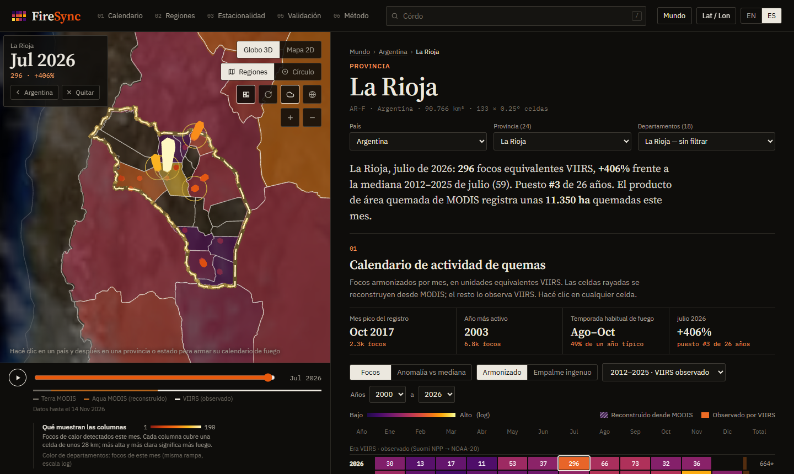
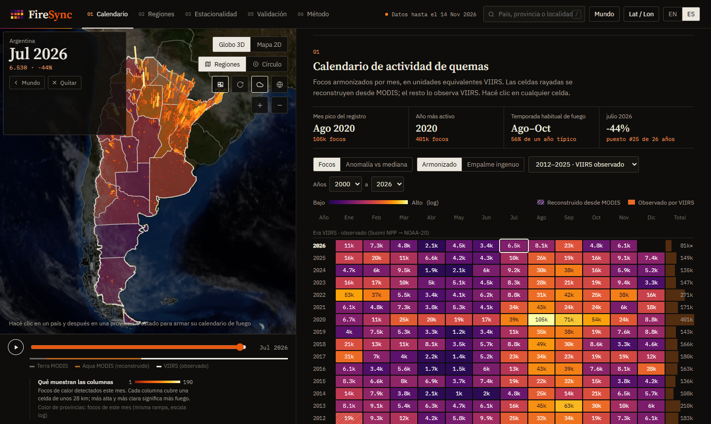
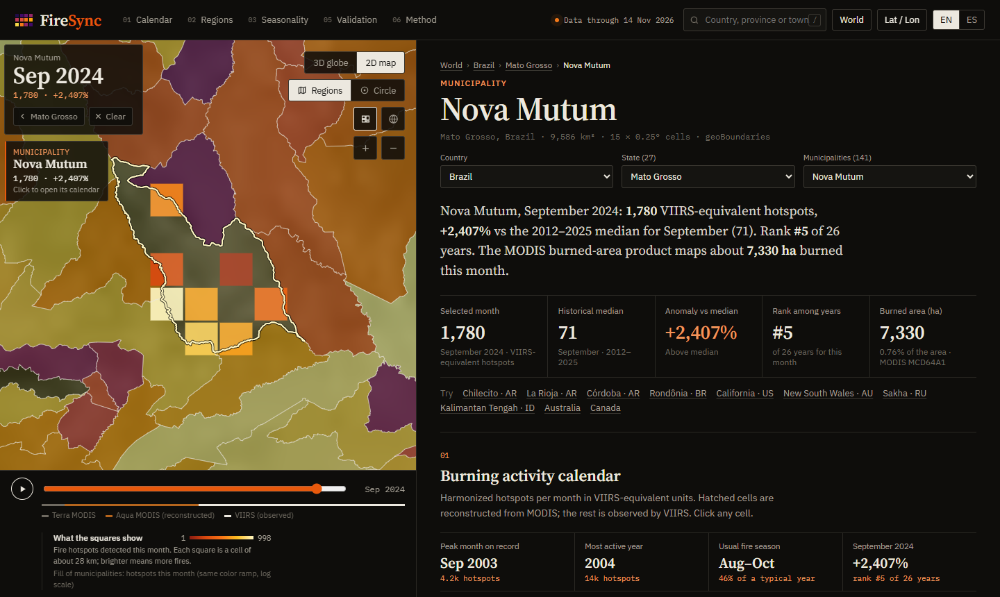

El motor de continuidad del registro de fuego de la Tierra. Documentación del proyecto: qué es, cómo funciona, qué se hizo, cómo se verificó y cómo presentarlo.
Los satélites detectan focos de calor: píxeles donde algo está ardiendo. Durante 25 años el instrumento de referencia fue MODIS (satélites Terra y Aqua, desde 2000). MODIS se está retirando y lo reemplaza VIIRS (satélites Suomi NPP, NOAA-20 y NOAA-21, desde 2012).
Los dos no ven lo mismo. VIIRS tiene píxeles de 375 m contra 1 km de MODIS y es mucho más sensible de noche. Para el mismo fuego, VIIRS cuenta entre 4 y 6 veces más focos de día y hasta 30 veces más de noche.
El reto pide armonizar los dos registros y mostrarlos en un calendario de actividad de quemas (año × mes) que permita elegir región y fechas, ver qué meses y años tuvieron más fuego y comparar el mes actual con la mediana histórica.
| Pedido del reto | Cómo lo cumple FireSync |
|---|---|
| Armonizar MODIS y VIIRS | Un único registro mensual, de noviembre de 2000 a noviembre de 2026, expresado en focos equivalentes VIIRS |
| Calendario desde los 2000 | Mapa de calor año × mes. Las celdas reconstruidas desde MODIS van rayadas; las observadas por VIIRS, lisas |
| Elegir región y fechas | Mundo → país → provincia o estado → departamento. También un círculo de radio ajustable, latitud y longitud, y un buscador. Selector de años |
| Qué meses y años tuvieron más fuego | Franja de datos sobre el calendario (mes pico, año más activo, temporada habitual), totales por año como barras y ranking de regiones |
| Mes actual contra la mediana | Anomalía en porcentaje, puesto entre todos los años y una frase en lenguaje claro |
| Colores accesibles | Rampa inferno (perceptualmente uniforme) y una divergente apta para daltonismo |
| CSV descargable y mapa interactivo | CSV de la matriz y de la serie, PNG del calendario, enlace compartible. Globo 3D y mapa 2D |

La idea central: no se suman satélites y no se usa un único número mágico. Se elige un satélite de referencia para cada época y se traduce lo que vio MODIS al "idioma" de VIIRS con factores medidos en los años en que los dos volaron juntos.
Se usan todas las detecciones de NASA FIRMS: 556 millones entre 2000 y 2025, más 2026 por la API. Se conserva solo el fuego de vegetación (type = 0): quedan fuera volcanes, fábricas y antorchas de gas. Se exige confianza ≥ 30 en MODIS y nominal o alta en VIIRS.
| Período | Satélite que define el mes | Cómo entra al registro |
|---|---|---|
| Nov 2000 – Jun 2002 | Terra (MODIS) | Reconstruido a equivalente VIIRS |
| Jul 2002 – Ene 2012 | Aqua (MODIS) | Reconstruido a equivalente VIIRS |
| Feb 2012 – Oct 2026 | Suomi NPP (VIIRS) | Observado, sin tocar |
| Desde Nov 2026 | NOAA-20 (VIIRS) | Observado, con un factor casi igual a 1 |
Como siempre manda un solo satélite, sumar o perder satélites no infla los conteos.
Entre 2012 y 2021 Aqua y Suomi NPP observaron los mismos fuegos. Para cada país × mes del año × día o noche se calcula cuántos focos VIIRS hubo por cada foco MODIS. Ese cociente es el factor.
Para reconstruir un mes viejo: focos MODIS de día × factor de día + focos MODIS de noche × factor de noche.
El factor no es idéntico todos los años. La app muestra un rango probable para cada mes reconstruido, tomado de cuánto varió ese cociente de un año a otro (rango intercuartil).
| Métrica | FireSync | Un solo factor global |
|---|---|---|
| Error absoluto mediano | 22,8 % | 35,7 % |
| Sesgo total | −1,7 % | −4,2 % |
Chequeo del relevo. Octubre de 2026 es el único mes completo con Suomi NPP y NOAA-20 a la vez en el registro de 2026, y el ajuste nunca lo vio. En 138 países, NOAA-20 reproduce a Suomi NPP con 7,7 % de error mediano y +3,8 % de sesgo.
| Pieza | Archivo | Qué hace |
|---|---|---|
| Pipeline de datos | pipeline/FireSync.cs (C#) | Lee los 48 archivos anuales de FIRMS (45 GB de CSV) en unos 2 minutos. Agrupa cada detección en una grilla de 0,25° (~28 km) por país, mes, satélite y día/noche. Calcula factores, incertidumbre y validación |
| Regiones | scripts/build_regions.mjs | Une los bordes de Natural Earth con el registro. Calcula el calendario de las 4.596 provincias y estados |
| Departamentos | scripts/build_adm2.mjs | Anida 49.038 departamentos, condados y municipios (geoBoundaries) en su provincia y calcula sus calendarios |
| Controles | scripts/audit_regions.mjs, handover_check.mjs | Auditoría de datos y chequeo del relevo. Se pueden volver a correr |
| App web | web/ | Sitio estático, sin servidor ni base de datos. JavaScript sin framework. Los datos son archivos JSON ya calculados |
app.js: la lógica (qué área está elegida, qué mes, filtros, idioma, enlace compartible).calendar.js: el calendario. charts.js: los gráficos (Apache ECharts).globe.js: el globo 3D (three.js y globe.gl). map2d.js: el mapa 2D. view.js: el interruptor entre los dos.data.js: carga de datos, búsqueda de localidades (OpenStreetMap) y área quemada (MODIS MCD64A1 en Microsoft Planetary Computer).| Control | Resultado |
|---|---|
| Focos de 2025 dentro del contorno del país al que FIRMS los asigna (bordes de Natural Earth, fuente independiente) | 99,97 % |
| Suma de países contra la serie mundial, peor mes desde 2012 | 0,03 % de diferencia |
| Países de FIRMS con contorno propio y único | 232 de 234 |
| Celdas con fuego asignadas a una provincia | 98,9 % |
| Provincias que suman entre 85 % y 115 % del país | 136 de 142 países |
| Brasil 2024, Aqua: INPE informó unos 278 mil focos | FireSync cuenta 299.599 (+7,6 %; incluye la pasada nocturna). Confirmar la cifra de INPE antes de citarla |
| Chilecito, julio de 2026: prensa estimó 10.000–15.000 ha | FireSync: unas 11.800 ha (MODIS MCD64A1) |
| Error | Arreglo |
|---|---|
| Australia aparecía como "Islas Ashmore y Cartier"; Marruecos como "Sahara Occidental" | Los territorios que FIRMS cuenta dentro de otro país ya no le cambian el nombre. Los números siempre estuvieron bien |
| Guayana Francesa figuraba como departamento de Francia | Los territorios de ultramar que FIRMS registra aparte son países |
| Área quemada inflada en países grandes (Brasil: 51 millones de ha en un mes) | Lectura a resolución completa en bloques de 6°. Ahora da unos 9,6 millones |
| El globo se trababa (2 a 7 cuadros por segundo) | Capa de regiones reescrita. Ahora 60 cuadros por segundo |
| Etapa | Trabajo |
|---|---|
| Sábado 14, madrugada | Descarga de FIRMS, pipeline de armonización, validación ciega, primera versión del calendario y del globo, datos de 2026 por API, publicación en GitHub Pages |
| Sábado 14, tarde | Regionalización: bordes de países, 4.596 provincias y 49.038 departamentos con calendario propio. Filtros, ranking, rango de años. Leyenda fuera del globo |
| Sábado 14, noche | Rendimiento (60 cuadros por segundo), mapa 2D, selección por región o círculo, navegación nueva, calendario como primera sección, limitaciones, chequeo del relevo, área quemada corregida |
| Domingo 15 | Corrección de nombres de países y territorios, auditoría de datos, página estable entre idiomas, buscador animado, calendario en la primera pantalla, despliegue |


| Criterio | Nota | Por qué |
|---|---|---|
| Creatividad | 4,5 / 5 | Trata el problema como un sistema de continuidad y no como un factor. Calendario unido a un globo y un mapa que bajan hasta el departamento. Lo que no es nuevo: el calendario en sí, que es lo que pide el reto |
| Validez | 4,5 / 5 | Mide y publica su propio error, lo compara con el método simple, muestra incertidumbre y limitaciones. Resta: las provincias heredan el factor del país y el chequeo del relevo es de un solo mes |
| Relevancia | 5 / 5 | Cumple todos los puntos del enunciado y el calendario está en la primera pantalla |
| Impacto | 4,5 / 5 | Sirve a cualquier país, gratis y sin instalar nada. El caso de Chilecito es real. Resta: todavía no lo probó un usuario real (un bombero, una oficina de Defensa Civil) |
| Presentación | Depende del equipo | El producto se ve profesional. La nota la define cómo lo cuenten: historia clara, demo en vivo sin tropiezos y poder explicar el método sin leer |
Mira sobre todo el video de 30 segundos y la página de entrega; muchos no abren la app. FireSync compite bien en Best Use of Data y en Local Impact. Estimación de criterio, no un dato: nominación local 60–80 %, finalista global 10–20 %, uno de los 10 premios 2–5 %.
| Pregunta | Respuesta |
|---|---|
| ¿Por qué no multiplicar MODIS por un número? | Porque la diferencia cambia según el lugar, la estación y si es de día o de noche: de 5 veces de día a 29 de noche. Un solo número da 35,7 % de error; el nuestro, 22,8 % |
| ¿Cómo saben que funciona? | Prueba ciega 2018–2021 con factores de 2012–2017, y el chequeo de octubre de 2026 con datos que el ajuste nunca vio |
| ¿Qué no puede hacer? | No mide hectáreas ni cuenta incendios: mide actividad. Antes de 2012 es una reconstrucción. En áreas muy chicas es indicativo |
| ¿Qué hicieron ustedes y qué la IA? | La IA (Claude) escribió el código y la investigación de base, y está declarado. El equipo eligió el reto, definió qué construir, probó, corrigió y decidió cada cambio |
| ¿Quién lo usaría? | Defensa Civil, brigadas, servicios meteorológicos y periodistas: cualquiera que necesite saber si este mes es anormal en su zona |
git push a main vuelve a publicar la carpeta web/.npx wrangler@3 pages deploy web --project-name firesync --branch main.docs/DEPLOY_CLOUDFLARE.md.Datos. NASA FIRMS (MODIS MCD14ML Collection 6.1/6.2; VIIRS 375 m VNP14IMG y VJ114IMG V002) y la API de FIRMS para 2026. Área quemada: MODIS MCD64A1 Collection 6.1 (NASA LP DAAC) a través de Microsoft Planetary Computer. Bordes: Natural Earth (dominio público) y geoBoundaries (Runfola et al. 2020). Localidades: © colaboradores de OpenStreetMap. Imágenes: NASA Blue Marble. Librerías: three.js, globe.gl, Apache ECharts.
Uso de Súper Inteligencia. El código, el pipeline, la investigación de base y este documento se hicieron con asistencia de Claude (Anthropic). Está declarado en AI_USAGE.md y en el encabezado de cada archivo. FireSync es un proyecto del NASA Space Apps Challenge y no está respaldado por NASA.